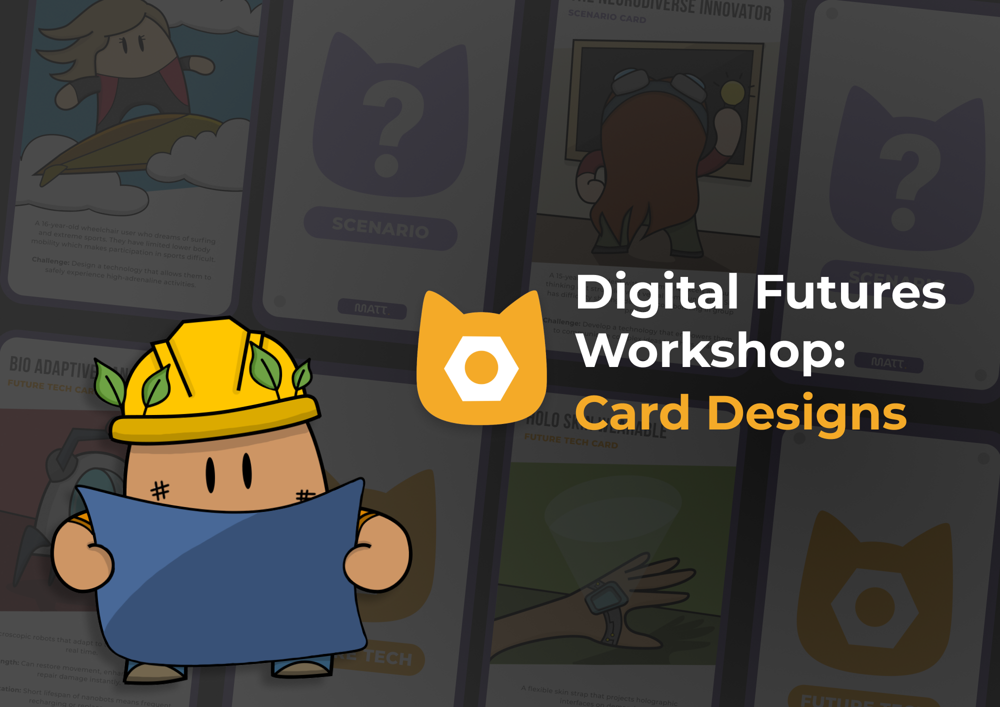

Student team project / Collaboration
Digital Futures Workshop: Interactive Card Game
A workshop toolkit that helps high school students understand how future technology could assist people with diverse physical and cognitive needs.
- Project type
- Workshop toolkit
- My role
- Visual designer
- Timeline
- 2 weeks
- Tools
- Photoshop, Illustrator
Summary: Lectures and slides rarely get teenagers thinking creatively about accessibility. I designed 17 cards for an interactive game where students solve real user scenarios with futuristic technology. Participants rated the workshop 4.5/5.

The problem
- Students find theory about future accessible tech a little dry and difficult to conceptualise.
- Passive learning methods such as lectures and textbooks sometimes fail to spark creative problem-solving about accessibility.
The goal
- Turn accessibility requirements into game mechanics that make students challenge their ability to problem-solve on the spot.
- Use gameplay scenarios to show the real-world barriers faced by people with diverse physical and cognitive needs to build empathy.
Insights & decisions
Visuals affect willingness to join in
Finding: To get teenagers sharing ideas without pressure, the activity needed to feel fun, inclusive and approachable.
Decision: Each card had a character from different cultural backgrounds, illustrated in a simple vector line art style.
Structure leads to better ideas
Finding: Some students struggle with a blank slate but thrive when given prompts and constraints.
Decision: Scenario Cards (the user’s problem) and Future Technology Cards (the tools to solve it), each with their own strengths and limitations to push critical thinking.
The solution
- Persona-driven scenario cards: Scenarios were given to encourage students to design for specific, relatable people instead of disability in general.
- Grouped future tech cards: Future Technology cards were sorted into themes like biological integration and cognitive support. Grouping them helped students focus on one category without feeling overloaded.
The results
Students said the workshop made them more aware of people with disabilities and tech they may need, in a lighthearted tone. The prompt and constraint cards sparked a wide range of ideas.
What I learned
- Playtesting a physical game works like usability testing a digital product, and participant feedback is essential.
- Feedback showed room for broader inclusion, so future versions will expand the cards beyond vision and mobility constraints.